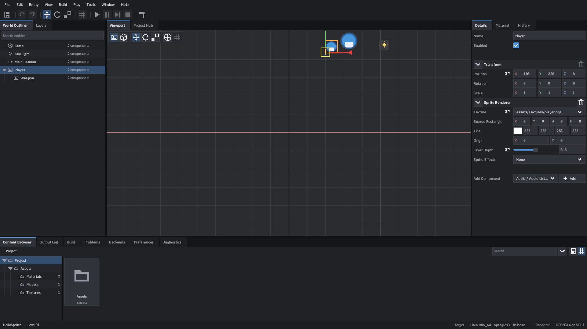
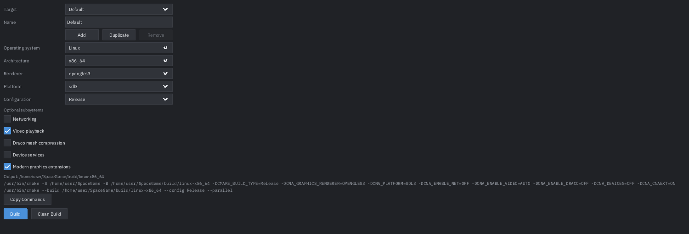

Tutorial · about 45 minutes
Build, play and ship your first CNA game
Fourteen parts, start to finish: a clone, a project, an asset on screen, a build you can read the errors of, a game running in its own process, a crash you recover from, and a final step that proves none of it needs Studio installed.
Get Studio running
Studio's default build has no external dependencies at all — no CNA checkout, no GPU, no display. That build has no 3D viewport, but everything else in this tutorial works in it, including creating the project and building the game.
git clone https://github.com/libcna/cna-studio
cd cna-studio
cmake -S . -B build -G Ninja
cmake --build build -j4Check it:
./build/cna-studio --version
./build/cna-studio --list-templatescna-studio 1.0.0--list-templates prints four templates. If it does, you have a working Studio and
can do every part of this tutorial except looking at the viewport.
If you want the viewport too
The CNA-backed viewport is opt-in because it needs two sibling checkouts next to this one:
cd ..
git clone https://github.com/libcna/cna.git
git clone https://github.com/libcna/sharp-runtime.git
cd cna-studio
cmake -S . -B build-cna -DCNA_STUDIO_WITH_CNA=ON -DCNA_DEVICES=ON
cmake --build build-cna -j
From here on, ./build/cna-studio means “whichever build you made”.
-DCNA_DEVICES=ON is what gives Studio a working clipboard. CNA itself needs
SDL3's build dependencies and FFmpeg headers; the root README.md lists the exact
Debian package names.
Make a project
Two ways in, and they are the same code: the Project Hub (the tab beside Viewport when nothing is open) or the command line. The command line is easier to show:
./build/cna-studio --new-project=/tmp/MyGame \
--template=basic-sample \
--project-name="My Game"cna-studio: created 14 files in '/tmp/MyGame'Here is what those files are:
| Path | What it is |
|---|---|
My Game.cnaproject | The project file Studio opens. Name, kind, asset roots, build target profiles |
CMakeLists.txt | Yours. Studio drives it and never rewrites it |
Source/Main.cpp | Your game's entry point. Studio never edits this either |
Assets/ | What the importers watch. Drop files in; there is no import button |
Scenes/ | What the editor edits. .cnascene documents |
Runtime/ | The scene loader this template brought with it — ordinary C++ you own |
Which template
| Template | Starts you with |
|---|---|
basic-sample | A scene with something already in it. Use this one |
empty-2d | A 2D project with an empty scene |
empty-3d | A 3D project with an empty scene |
xna-compatible | A hand-written Initialize/LoadContent/Update/Draw game, with no scene model at all |
They differ in what they start you with, not in what they let you do. A project also declares
its kind, and the kind decides what Studio offers: CnaNative gets scenes,
entities, components, gizmos, prefabs and both viewports; XnaCompatible gets
assets, importer settings, previews, renderer configuration and Play, and nothing else,
because your game keeps its own game loop.
Learn the window
Open what you just made:
./build/cna-studio --project="/tmp/MyGame/My Game.cnaproject"Or without a window at all, which is what the test suite does and what you can do over SSH:
./build/cna-studio --project="/tmp/MyGame/My Game.cnaproject" --headless --frames=2[info] Opened project 'My Game' (CnaNative) at /tmp/MyGame
[info] Assets: 4 found, 0 new, 0 moved, 0 missing
[info] Opened scene 'Level01' with 5 entities
| Where | Panel | For |
|---|---|---|
| Top | Menu bar and toolbar | File, Edit, Entity, View, Build, Play, Tools, Window, Help. Save, undo/redo, the gizmo mode, snapping, and the play controls |
| Left | World Outliner | The scene as a tree. Search, visibility and lock toggles, drag to reparent |
| Left | Layers | The scene's layers |
| Middle | Viewport | 2D, 3D and Game views, with the mode strip along its top |
| Middle | Project Hub | New, Open, and a recent list that greys out what has moved |
| Right | Details | Everything about what is selected |
| Right | Material, History | The selected material; the undo stack as a list you can read |
| Bottom | Content Browser | The project's assets, as a folder tree and cards |
| Bottom | Output Log | Studio's messages and the running game's, each marked with its source |
| Bottom | Build, Problems | Target profiles and the build; compiler diagnostics as rows |
| Bottom | Backends, Preferences, Diagnostics | Renderer comparison; your settings; what this build can do |
Panels dock, undock into floating windows and re-dock by dragging their tab, and the arrangement is remembered per project. Window › Panels reopens anything you closed.
Bring in an asset
Copy any PNG into /tmp/MyGame/Assets/Textures/. That is the whole import step
— the Content Browser watches the directory, notices the file and imports it. There is
no import button to find, and nothing to click.
Beside your PNG a .cnaasset sidecar appears. It holds the asset's UUID and its
importer settings, and the UUID is what makes a reference survive you renaming or moving the
file later. Commit sidecars along with the assets they describe.
Assets/.
Finding it again
- Search (the field top right of the browser) covers the name, the kind and the path, and deliberately leaves the current folder behind to look at the whole project — searching only inside one folder is how people conclude an asset is gone when it is one folder over.
- The kind filter beside it narrows what you are browsing, which is the opposite scope on purpose: a filter is a way of looking at where you are standing.
- Both scale. A hundred thousand assets, searched or browsed, cost a screenful — the panel builds rows for what is on screen, not for what matches.
Right-clicking a card offers Reveal (opens your file manager at it), a reimport when the file on disk is newer than what was imported, and favourites. The folder pane keeps a favourites and a recents list, and drops entries whose asset went away.
Put it in the scene
Two ways, and both end in the same undoable command:
- Drag the card into the viewport. That makes an entity with a sprite renderer already pointing at your texture.
- Entity › Create › Sprite, then set the texture in the Details panel. The same menu creates Empty, Model, Camera, Audio and Directional, Point and Spot lights.
The new entity appears in the World Outliner. F2 renames it in place; Ctrl+D duplicates; Del deletes. Drag one row onto another to reparent it — the child keeps its position on screen, because a reparent that moved things is a reparent nobody can use. Ctrl+G wraps the selection in a group, Ctrl+Shift+G unwraps it.
Move it, precisely
With the entity selected, the viewport gives you a gizmo:
| Key | Does |
|---|---|
| W / E / R | Translate / Rotate / Scale |
| X | Switch the gizmo between world and local space |
| F | Move the camera to frame the selection |
| 2 / 3 / 4 | 2D view / 3D view / Game view |
A drag along one arm is constrained to that axis, and the plane handles between the arms move two at once. The whole drag is one undo entry, not one per mouse-move. The snap toggle in the toolbar rounds to the increment beside it.
What is selected is outlined. Select a second entity and you also get a box round the whole selection and a cross at the point a rotation will turn about — which is the thing you need to know before you press R. View › Pivot chooses whether that point is the selection's centre or its active entity.

When the mouse is not precise enough
Type into the Details panel instead. Position, Rotation and Scale are ordinary number fields — drag on one to scrub it, or click and type an exact value.

Light it
Entity › Create › Light gives you a directional, point or spot light. Select it and the Details panel shows what that type actually has: a point light's range is live, a directional light's is dead, because a directional light has no range to set.
Materials are assets. Right-click in the Content Browser for New Material — it is written into the folder the browser is standing in — then assign it to an entity's Model Renderer, or override a single part of a multi-part model.
View › Shading switches between shaded and wireframe, and the debug views (lighting, normals, metallic, roughness, unlit) show one channel at a time when something looks wrong.
Save
Ctrl+S saves the active document, Ctrl+Shift+S saves everything with unsaved changes. The status bar and the document tab mark what is dirty.
Every write is atomic: the bytes go to a temporary file which is then renamed over the old one. An interrupted save therefore leaves you with the previous version intact rather than half of both, and that is true of autosave snapshots too. If Studio ever finds a left-over partial file it reports it by name instead of trying to read it.
Choose what you are building
Open the Build panel. A project carries one or more target profiles, and a profile is one build of your game.

| Field | What it decides |
|---|---|
| Target / Name / Add / Duplicate / Remove | Which profile you are editing. Keep one per thing you ship |
| Operating system, Architecture | What you are building for |
| Renderer | The CNA graphics backend. The list offers only what CNA will actually configure for the chosen system |
| Platform | The CNA windowing and input layer — SDL3, SDL2, headless or terminal |
| Configuration | Debug or Release |
| Optional subsystems | Networking, video playback, Draco mesh compression, device services, modern graphics extensions |
An option that is tri-state in CNA is tri-state here. CNA_ENABLE_VIDEO is
OFF, AUTO or ON: AUTO uses FFmpeg where the
build machine has it, and ON requires it and fails the configure without
it — which is a thing a shipping project may well want to say.
Copy Commands puts the exact, untruncated, shell-quoted command lines on your clipboard. Run them yourself in a terminal and you get the same build; Studio has no build system of its own and no private flags.
Build it, and break it
Ctrl+B builds. Ctrl+Shift+B is a clean
build: it runs your project's own clean target between the configure and the
build. It does not delete your build directory, so nothing you are keeping in there
disappears.
Set your editor first
Go to Preferences › Tools and set External editor to a full path or a
name on your PATH — clion, code,
vim, subl, kate and their relatives are known well
enough to be told which line to jump to. Studio does not guess: on Linux, whatever opens a
.cpp by default is as likely to be a text viewer as an IDE, so with nothing set
the gesture is refused with a message naming this setting.
Now break something on purpose
Open /tmp/MyGame/Source/Main.cpp, delete a semicolon, save, and press
Ctrl+B. The Problems panel fills with rows — each naming the
file, the line, the column and the message. Activate the row and your editor opens at that
line.
The parser understands GCC, Clang, MSVC and CMake's own configure errors, keeps a
note: attached to the diagnostic above it, and does not split a Windows path on
its drive letter. Whatever it made of the output, Open Build Log gives you the complete
unparsed log.
Play it
F5. Your game launches in a separate process — cna-player
— which is the reason a crash in your game is a crash in your game: Studio reports it,
with the exit reason the operating system gave, and stays up.
| Key | Does |
|---|---|
| F5 | Play |
| Ctrl+F5 | Pause |
| Alt+F5 | Step one frame |
| Shift+F5 | Stop |
| F12 | Ask the running game to write the frame it is showing to a PNG |
cna-player: project 'My Game', backend SOFTWARE, scene 'Level01' (5 entities)
cna-player: ran 60 frames, 2 sprites and 0 tiles on the last oneThe player's log is routed into the Output panel with its source marked, so you can tell your game's messages from Studio's. Edits you make while it runs are mirrored across, and assets reload live.
Play is refused, with a reason, when there is nothing to play or nothing to play it with — an unsaved scene says so rather than being written out silently behind you, and a player that cannot be launched is reported rather than leaving the toolbar stuck.
Survive a crash
Worth doing once, deliberately, so that you trust it. Move your entity, do not save, and kill Studio:
pkill -9 cna-studioReopen the project. Studio finds the autosave snapshot that belongs to it and offers it.
- Recover takes the work back and leaves it unsaved, so you decide where it goes.
- Discard removes the snapshot and the offer.
- Both commands are on the File menu, and both are greyed out when there is nothing to answer for.
Snapshots live in your per-user state directory, not in the project, and are written atomically for the same reason saves are. The interval is Preferences › Autosave; zero disables it.
Hand off to your IDE
Tools › Open Project in External Editor hands the whole directory to CLion, VS
Code or whatever you configured in part 10.
Tools › Open Main Source in External Editor opens Source/Main.cpp.
This is not an escape hatch, it is the point. Studio does the visual half; the C++ is written where you write C++. There is no code editor here, no completion and no debugger, and none of those are planned.
Prove it does not need Studio
The step that matters most. What you have made is an ordinary CNA project — a
directory with a CMakeLists.txt, some C++ and some assets. Build it with Studio
nowhere in the picture:
cmake -S /tmp/MyGame -B /tmp/MyGame/build \
-DCNA_ROOT=/path/to/cna -DCNA_GRAPHICS_RENDERER=SOFTWARE
cmake --build /tmp/MyGame/build -j4
cd /tmp/MyGame/build && SDL_VIDEODRIVER=dummy ./My_Game --frames=10My_Game: loaded 5 entities, drew 2 spritesctest -R CnaStudioTemplateBuilds) — because the one failure mode this rule
has is the one that looks fine until somebody tries it.
Troubleshooting
| Symptom | Why, and what to do |
|---|---|
The viewport is empty and the status bar says none, headless preview |
You built without -DCNA_STUDIO_WITH_CNA=ON. Everything except the scene viewport works; see part 1 to add it |
| Studio refuses to open a window at all | Your graphics backend does not meet the profile the UI renderer needs. The Diagnostics panel and cna-studio --host-capabilities both say which requirement failed |
| An asset does not appear in the Content Browser | It is outside Assets/, or its importer refused it. The Output Log says which |
“Cannot build: the project has no CMakeLists.txt” |
You opened a project that has no build of its own. A CNA game's build is the game's own; Studio only runs it |
| Opening a diagnostic row does nothing | No external editor is configured. Preferences › Tools › External editor |
| The build was killed with no error in the log | Out of memory, not a compile failure. Lower the parallel job count, or build from the terminal with Copy Commands and a smaller -j |
| Non-Latin names render as boxes | Known and deliberate. Localisation, IME input and non-Latin text rendering were cut on budget rather than on merit |